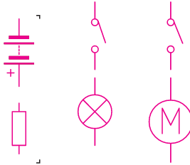
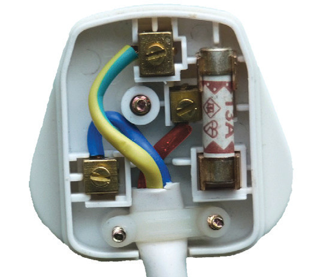
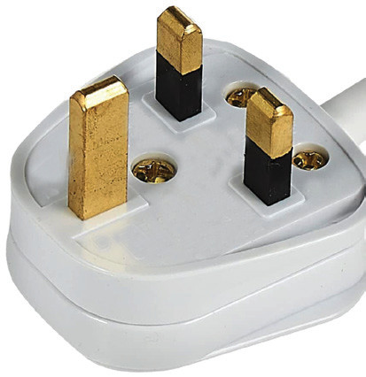

Electrical installations
Electricity is a highly convenient and clean source of power. Electricity is supplied in houses by low-resistance wires (copper or aluminium) insulated with rubber. The cables are rated according to the maximum current they can carry.
Live, Neutral and Earth
Domestic electricity is supplied through two cables: the live cable (L), coloured brown or red, and the neutral cable (N), usually coloured blue or black. For a single-phase system, the live cable is at a potential of 240 V relative to the neutral line. The current in the cable alternates 60 times a second (60 Hz). The neutral cable is earthed; it is connected to the ground at the power station. This ensures that even though current flows through this cable, it remains at zero potential. In this situation, it cannot give an electric shock when touched. To provide extra safety, especially in electrical appliances, a third cable called earth (E), coloured yellow or green, is also provided and is earthed by connecting it to the ground via a thick copper rod. This cable connects the metal body of an electrical appliance to the ground through a three-pin plug. A three-pin plug and electrical wiring cables are connected as shown in Figure 2.41.

